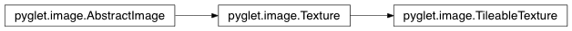

TileableTexture Class¶
-
class
TileableTexture(width, height, target, id)¶ A texture that can be tiled efficiently.
Use create_for_image classmethod to construct.
Methods:
create(width, height[, internalformat, …])Create an empty Texture. create_for_image(image)create_for_size(target, min_width, min_height)Create a Texture with dimensions at least min_width, min_height. Attributes:
anchor_xanchor_yimage_dataAn ImageData view of this texture. imageslevelmipmapped_textureA Texture view of this image. tex_coordstex_coords_ordertextureGet a Texture view of this image. xyz
Inherited members¶
Methods
TileableTexture.create(width, height, internalformat=6408, rectangle=False, force_rectangle=False, min_filter=9729, mag_filter=9729)Create an empty Texture.
If rectangle is
Falseor the appropriate driver extensions are not available, a larger texture than requested will be created, and a TextureRegion corresponding to the requested size will be returned.
Parameters:
- width (int) – Width of the texture.
- height (int) – Height of the texture.
- internalformat (int) – GL constant giving the internal format of the texture; for example,
GL_RGBA.- rectangle (bool) –
Trueif a rectangular texture is permitted. See AbstractImage.get_texture.- force_rectangle (bool) –
Trueif a rectangular texture is required. See AbstractImage.get_texture. Since: pyglet 1.1.4.- min_filter (int) – The minifaction filter used for this texture, commonly
GL_LINEARorGL_NEAREST- mag_filter (int) – The magnification filter used for this texture, commonly
GL_LINEARorGL_NEARESTReturn type: Texture
Note
Since pyglet 1.1
TileableTexture.create_for_size(target, min_width, min_height, internalformat=None, min_filter=9729, mag_filter=9729)Create a Texture with dimensions at least min_width, min_height. On return, the texture will be bound.
Parameters:
- target (int) – GL constant giving texture target to use, typically
GL_TEXTURE_2D.- min_width (int) – Minimum width of texture (may be increased to create a power of 2).
- min_height (int) – Minimum height of texture (may be increased to create a power of 2).
- internalformat (int) – GL constant giving internal format of texture; for example,
GL_RGBA. If unspecified, the texture will not be initialised (only the texture name will be created on the instance). If specified, the image will be initialised to this format with zero’d data.- min_filter (int) – The minifaction filter used for this texture, commonly
GL_LINEARorGL_NEAREST- mag_filter (int) – The magnification filter used for this texture, commonly
GL_LINEARorGL_NEARESTReturn type: Texture
Attributes
TileableTexture.anchor_x= 0
TileableTexture.anchor_y= 0
TileableTexture.image_dataAn ImageData view of this texture.
Changes to the returned instance will not be reflected in this texture. If the texture is a 3D texture, the first image will be returned. See also get_image_data. Read-only.
Warning
Deprecated. Use get_image_data.
Type: ImageData
TileableTexture.images= 1
TileableTexture.level= 0
TileableTexture.mipmapped_textureA Texture view of this image.
The returned Texture will have mipmaps filled in for all levels. Requires that image dimensions be powers of 2. Read-only.
Warning
Deprecated. Use get_mipmapped_texture.
Type: Texture
TileableTexture.tex_coords= (0.0, 0.0, 0.0, 1.0, 0.0, 0.0, 1.0, 1.0, 0.0, 0.0, 1.0, 0.0)
TileableTexture.tex_coords_order= (0, 1, 2, 3)
TileableTexture.textureGet a Texture view of this image.
Changes to the returned instance may or may not be reflected in this image.
Warning
Deprecated. Use get_texture.
Type: Texture
TileableTexture.x= 0
TileableTexture.y= 0
TileableTexture.z= 0